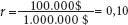
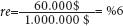

BİRİKİM VE KÂRLILIK
"Ticari İşletmenin itici gücü ... Kârdır."[8] (J. M. Keynes)
"Kâr yoksa satış anlamsızdır."[9] (Business Week)
Varlık nedeninin kâr elde etmek olduğunu her ticari işletme bilir. Klasik iktisatçılar, birikimin kalbini kâr oranı (r) ile faiz oranı (i) arasındaki farkın oluşturduğunu savunmaktaydılar. Zira kâr aktif yatırımın, faiz ise pasif yatırımın getirisidir. Belli miktarda sermaye, emtiaların üretimi veya satışında da, başkalarına borç vermekte de, etkin spekülasyonda da kullanılabilir. Her bir durumda elde edilen kâr oranı, yatırılmış sermayenin getirisi olacak, girişimlerin tabi olduğu tüm riskler, belirsizlikler ve hataları da bağrında taşıyacaktır. Ticaret erbabının kavramış olduğu üzere, "Bilinen belirlilikler ve ... bilinen belirsizlikler olduğu gibi ... bir de bilinmeyen belirsizlikler vardır."[10] Diğer taraftan, aynı miktarda sermayeyi tasarruf hesabına ya da güvenli tahvile yatıran bir kişi, arkasına yaslanarak da görece garantili bir şekilde faiz geliri elde edebilir. Bu tercihte kıstas noktasını teşkil eden faiz oranı, aktif yatırım sağladığı getiri oranı karşısındaki güvenli seçenektir. Marx, girişim kârı oranı [enterprise profit rate] şeklinde tanımladığı, aktif yatırımın itici gücünü oluşturan şeyin bu iki oran arasındaki fark (r – i) olduğunu belirtiyor. Keynes de hemen hemen aynı şeyi söylemekte: Kâr oranını, sermayenin marjinal verimi (SMV) şeklinde tanımlıyor ve bununla faiz oranı arasındaki farkı, yatırımın yaşabilirliğinin temeli sayıyor. Neoklasik ve post-Keynesçi iktisat da yine bu farka odaklanmakla birlikte, meseleyi dolambaçlı bir yoldan ele alıyor: Üretim maliyetleri, sermaye stokunun faiz karşılığını gösteren "fırsat maliyetini" de kapsayacak şekilde tanımlandıktan sonra, girişim kârı "ekonomik kâr" terimiyle ifade edilmekte, buna karşılık düşen kâr oranı da düpedüz girişim kârı oranı (r – i) olmaktadır.[11]
Şu örneği ele alalım: Bir firmanın yıllık kârının 100.000 $, cari faiz oranının yüzde 4, yılın başındaki sermaye stokunun da 1.000.000 $ olduğunu varsayalım. Firmanın sermayesi, güvenli bir tahvile yatırılsaydı 40.000 $ kazanç getirecekti. Klasik bakış açısıyla, firmanın toplam kârını, sermayenin 40.000 $'lık faiz karşılığı ve 60.000 $'lık girişim kârı şeklinde iki bileşene ayırabiliriz. Neoklasik iktisat, faiz karşılığını da tıpkı ücretler, malzeme ve aşınma gibi bir "maliyet" kalemi farz ederek, tüm bunları farklı bir kılığa sokuyor. Sonuçta, getirdiği ekonomik kâr tanımı da aslında örneğimizdeki 60.000 $'lık girişim kârından başkası değildir. Post-Keynesçi iktisat, bunun da aralarında bulunduğu pek çok konuda neoklasik yaklaşımları benimsemekte.
Kâr oranı, yıllık kâr miktarının yılbaşındaki sermaye stokuna oranı olup, burada  denklemiyle ifade edilir. Karşılık gelen girişim kârı oranı (re), girişim kârının sermaye stokuna bölümü şeklinde hesaplanmakta ve böylece  oranı elde edilmektedir. Bu durumda, girişim kârı oranının, kâr oranı ile faiz oranı arasındaki farka eşit olduğunu görmek hiç zor değil: re = r – i = %10 – %4 = %6.
Pratik düzlemde iki başka durum daha önem kazanıyor. Birinci olarak, ulusal hesaplarda gösterilen kâr ne toplam kâr miktarını (P) ne de girişim karı miktarını (PE) ifade etmekte, bu ikisi arasında bir yerde durmaktadır. Ulusal hesaplardaki ekonomik kâr terimi, ödenmiş fiili faiz miktarı fiili kârdan düşüldükten sonra kalan tutarı tanımlar. Örneğimizdeki firma toplam sermayesinin yarısını (500.000 $) borç almışsa, yüzde 4 faiz oranı üzerinden 20.000 $ fiili faiz ödemesi yapacaktır. Ulusal hesaplarda, işte bu fiili faiz ödemesinin (20.000 $) fiili kârdan (P = 100.000 $) düşülmesiyle hesaplanan kâr tutarı (P' =80.000 $) dikkate alınmaktadır. Dolayısıyla, fiili kâr tutarını bulmak için, ödenen parasal fiili faiz miktarını da ulusal hesaplardaki kâr rakamına eklemek durumundayız. Sonrasında, girişim kârı miktarını ve oranını daha önce açıkladığımız gibi hesaplayabiliriz.[12]
İkincisi, pay kısmına cari dolar değeri üzerinden kâr tutarlarını ve paydaya da cari fiyatlara karşılık düşen sermaye stokunu koyuyorsak, tüm kâr oranlarının enflasyona göre düzeltilmiş reel oranlar olması gerektiği unutulmamalı. Böylece, gerçek bir değerlendirmenin gereği olarak, pay ve payda aynı fiyat türlerinden oluşacaktır.[13] Hem P hem de K cari fiyatları yansıttığında yapılan kâr oranı (r) hesaplamasında bu durum zaten açıkça ortadadır. Ancak, girişim kârı oranı (re) hesaplamasında da aynı şey geçerli. Pay kısmında, cari kâr ile yılbaşındaki sermaye stoku üzerindeki cari faiz karşılığı arasındaki fark yer alıyor (P – iK). Böyle ölçüldüğünde, re = r – i şeklinde hesaplanan girişim kârı oranı da reel bir oran olacaktır.[14] Ulusal hesaplardaki kâr ve sermaye ölçümlerine dair daha ayrıntılı bilgi, formül ve değerlendirmeleri Ek: Veri Kaynakları ve Yöntemleri bölümünde bulabilirsiniz.
Şimdi, günümüz krizinin yolunu açan olayların çözümlemesine, bu tespitleri de cebimize koyarak devam edebiliriz. Kâr oranında meydana gelen hareketleri ilk ve en önemli sıraya oturtuyoruz.